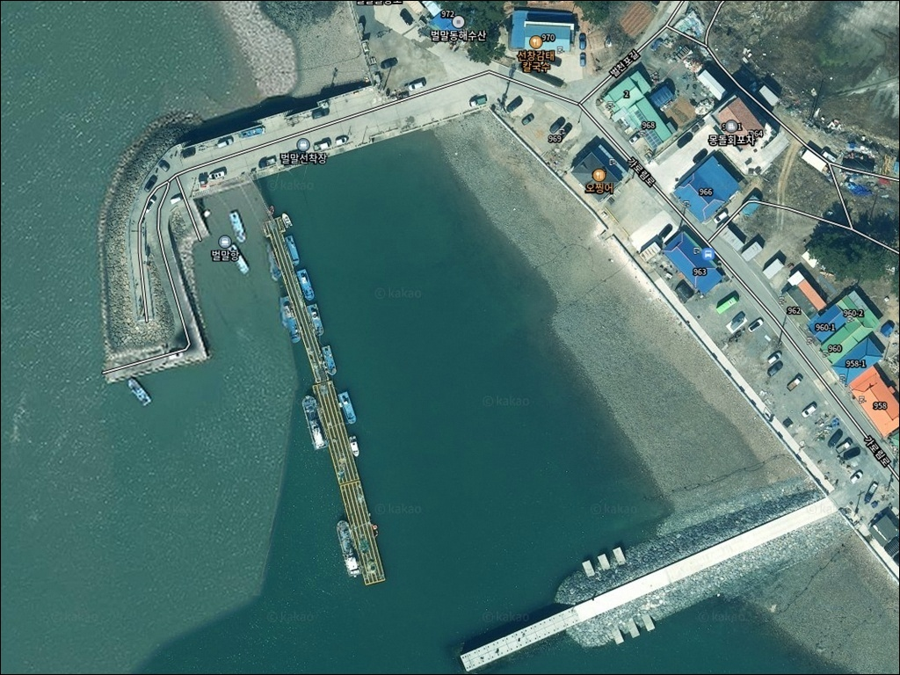
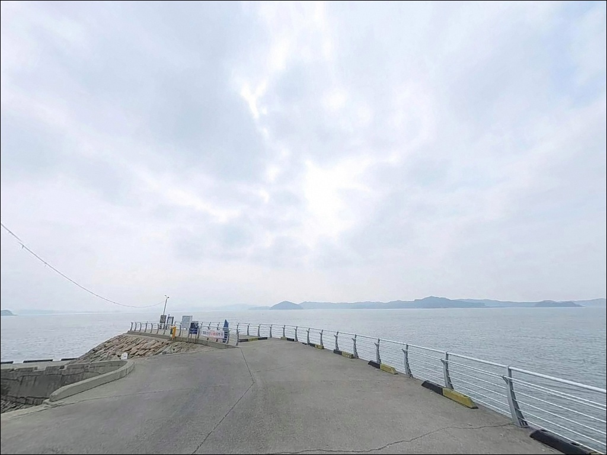
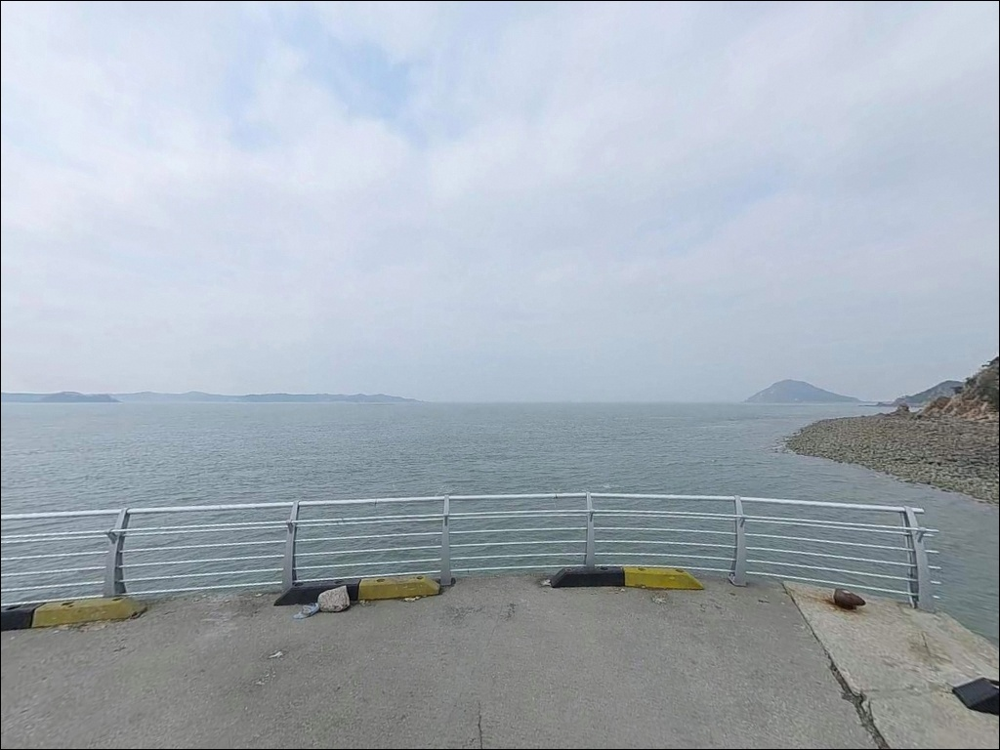
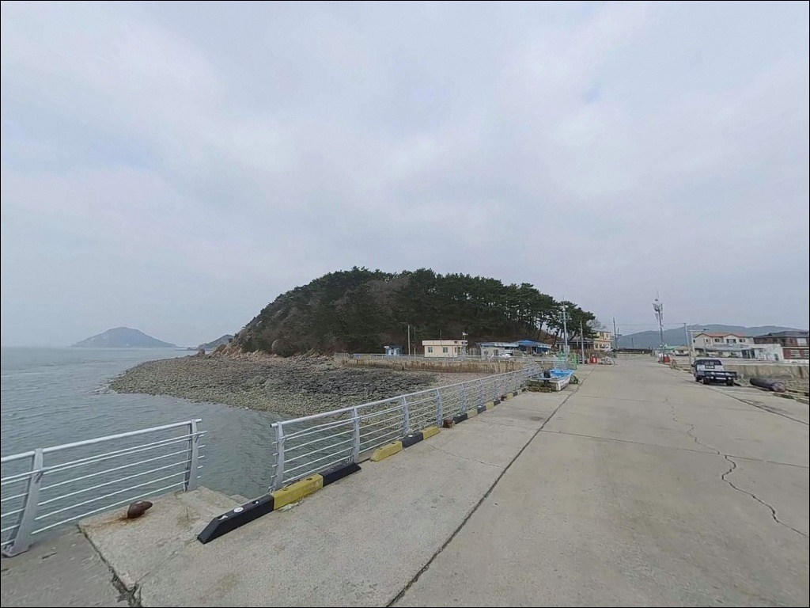
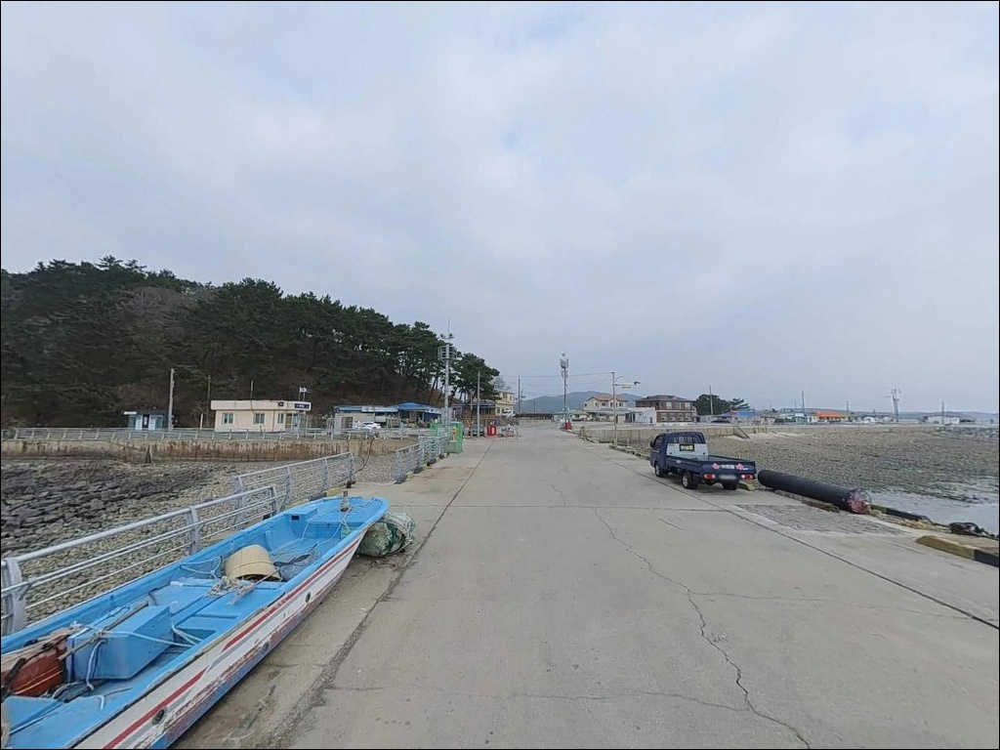
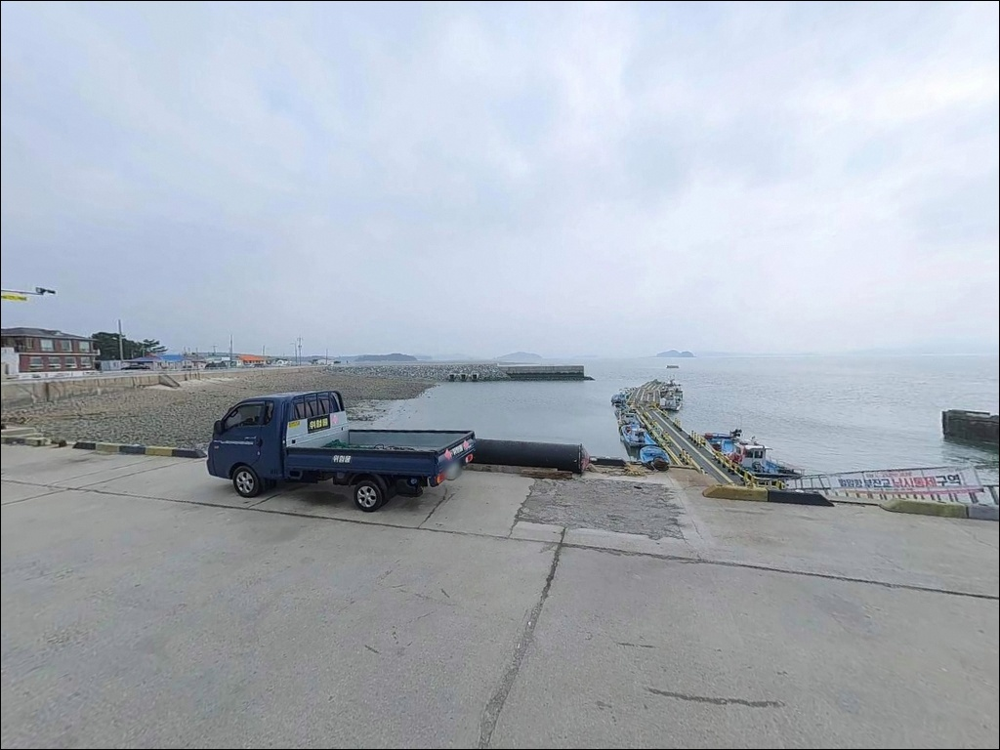
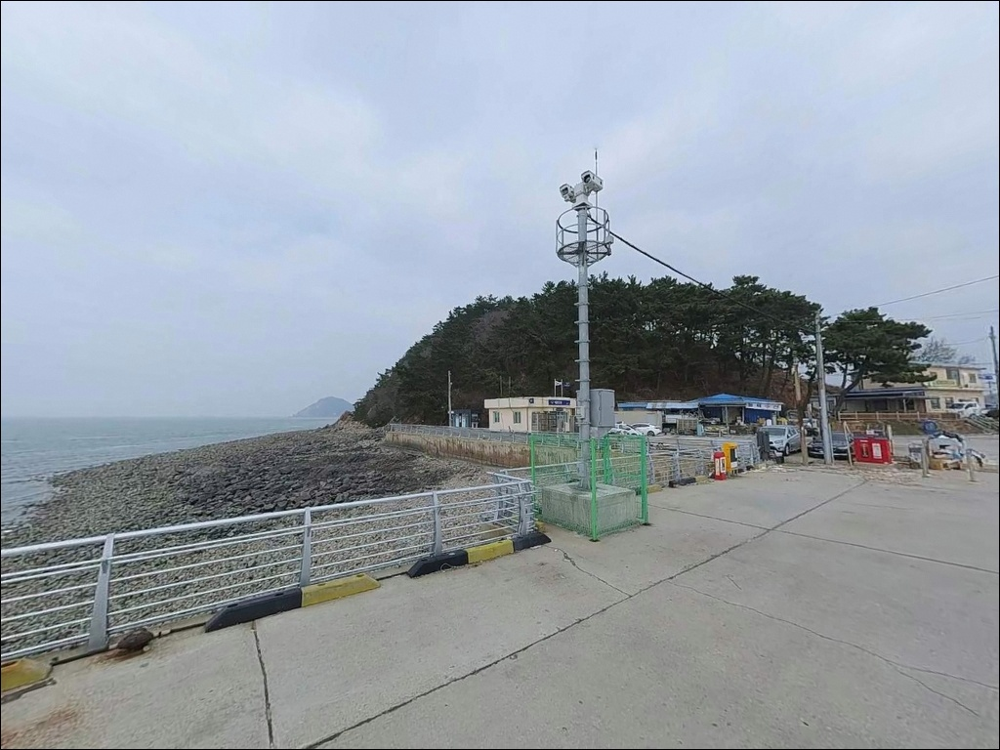
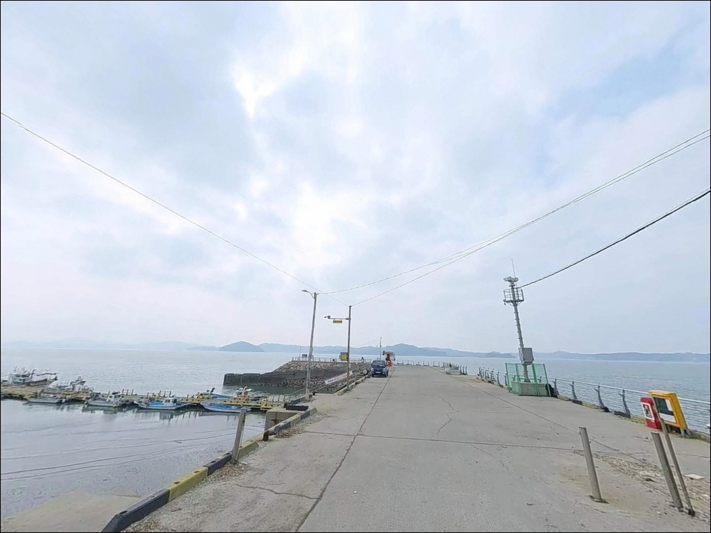
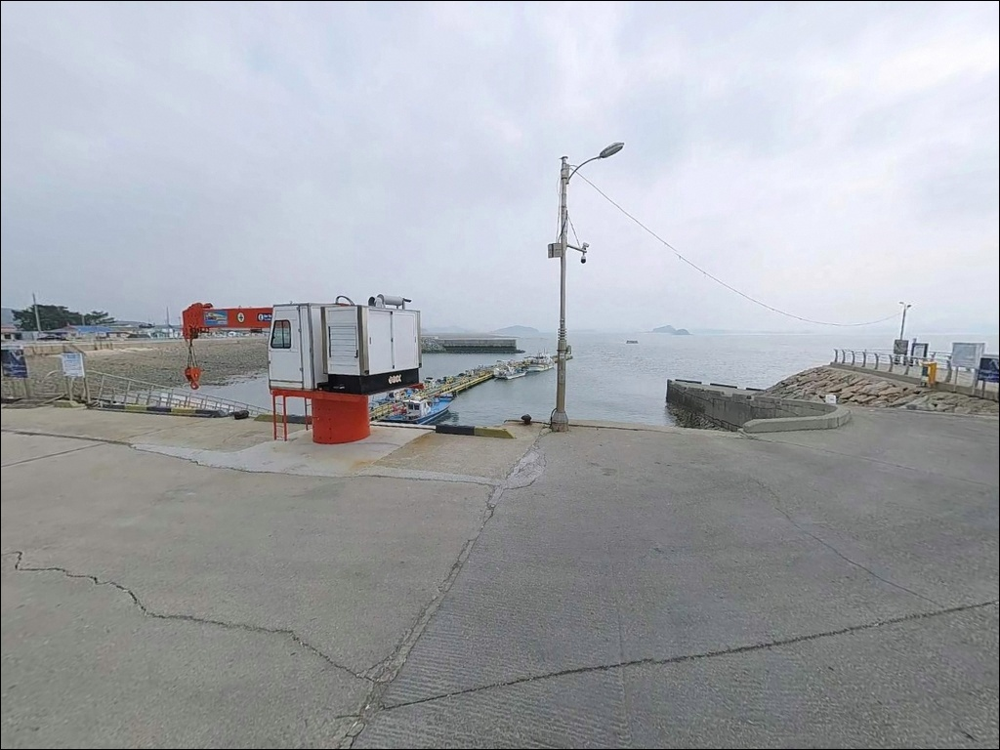

이 페이지에는 광고(제휴 링크 포함)가 있으며, 광고 링크를 통해 구매하면 운영자가 판매 수익 또는 수수료를 받을 수 있습니다. 포인트 사진: 카카오맵 스카이뷰·로드뷰. 이 페이지의 지도·사진 이미지는 카카오맵의 실제 서비스 이미지와 다를 수 있습니다.

벌말항, 벌말선착장, 충남 서산시 자연 그대로의 분위기에서 차박, 낚시를 즐기기 좋은 포인트
포인트 안내
가로림만 조류 안에서 채비를 제대로 운영하려면
정조 타이밍 파악이 먼저입니다.
조차가 최대 6m를 넘는 이 해역에서
사리 전후에 원투 채비를 던지면,
봉돌을 무겁게 달아도 채비가 밀려
바닥을 잡기 어렵습니다.
이 글은 벌말항의 진입 여건과 지형 구조,
낚시 스타일별 공략 조건에 집중합니다.
조황 단정이나 어종 보장은
이 글의 범위에 포함되지 않습니다.
벌말항
충남 서산시 대산읍 오지리 338-42
가로림만 입구 쪽으로 뻗은 반도 끄트머리에
벌말항이 자리합니다.
벌말선착장, 벌천포항으로도 불리는 이곳은
선착장과 방파제, 인근 갯바위로 이루어진
소규모 포구형 포인트입니다.
만 입구부 조류의 영향을 직접 받는 위치라
물때 중심의 낚시 설계가
이 포인트의 기본 전제입니다.

1. 진입 동선과 포인트 접근성
대산읍 시내에서 가로림로를 따라
반도 끝까지 이어지는 진입로는
콘크리트 포장 상태로 알려져 있습니다.
다만 반도 끝단으로 향하는 막힌 길 구조라
회차 공간이 넉넉하지 않을 수 있어,
대형 차량이라면 출발 전 위성지도로
진입 마지막 구간을 먼저 확인하는 편이 좋습니다.
주차는 선착장 갓길을 활용하는 방식이
일반적인 것으로 알려져 있습니다.
이때 반드시 확인해야 할 것이 있습니다.
침수주의 표시 아래까지 만조 때
해수면이 올라오는 지점이 있어,
당일 만조 시각과 조위를
바다타임에서 미리 확인한 뒤
주차 위치를 정하는 것이 안전합니다.
선착장 인근 공간을 추가로 활용하는 경우에도
어선 입출항 동선을 막지 않는 자리가
우선이며, 허용 여부는
현장에서 직접 확인하는 것이 기본입니다.

2. 차박 환경과 야간 체류 여건
반도 끝단 구조상 오지리 일대는
민가 밀집도가 낮고 야간에는
비교적 조용한 환경입니다.
선착장 주변에 가로등이 일부 있다는
언급이 있어 완전한 어둠 환경은 아닌 편이지만,
외항 방향으로 바람과 파도 노출이
있을 수 있어 기상 확인은 출발 전 필수입니다.
가로림만은 2016년 해양생물보호구역으로
지정된 해역입니다.
벌말항 일대가 보호구역 구간에
포함될 가능성이 있으므로,
차박 체류 전 인근 해양경찰 파출소에서
행위 제한 사항을 사전 확인하는 것이
가장 안전한 준비 방식입니다.
야간 낚시 후 현장 체류를 원한다면
선착장 인접 벌천포오토캠핑장을
함께 검토하는 편이 현실적입니다.
화장실과 샤워 시설을 갖춘
공식 운영 시설이라 선착장 노지 체류보다
준비 부담이 줄어드는 쪽입니다.


3. 주변 편의시설 및 인프라 현황
벌말항 선착장 인근에는
해양경찰 파출소가 위치해 있으며,
파출소 주변에 간이화장실이 있다는
언급이 있습니다.
다만 운영 상태는 현장에서
직접 확인이 필요합니다.
식당으로는 인근에
선창감태칼국수(충남 서산시 대산읍 가로림로 970,
09:00~18:00 운영)가 있습니다.
편의점과 마트는 대산읍 시내로
이동해야 이용 가능한 편입니다.
완전 자급 체제로 진입하는 것이
현실적인 준비 방식이며,
식수와 여분 채비는 출발 전에 갖춰야 합니다.
반경 10km권인 삼길포항 일대에는
낚시용품점과 편의시설이 갖춰져 있어,
부족한 소품이 있다면
이 방향으로 이동하는 것이
가장 효율적인 선택지입니다.

4. 방문 전 준비사항 및 체크 포인트
벌말항 방문에서 가장 먼저 해야 할 일은
물때 확인입니다.
바다타임에서 서산 대산 기준
물때와 만조·간조 시각을 확인하고,
조금 전후 또는 정조 타이밍을 노려
출발 시각을 맞추는 것이 기본입니다.
사리 전후 조류가 강한 시간대에는
어떤 채비도 컨트롤이 어려워지는 해역이라는 점을
반드시 염두에 두어야 합니다.
가로림만 조류 특성상
원투낚시 시 봉돌은 20호 이상을
기준으로 준비하는 편이 좋습니다.
자갈과 갯바위 지형이 혼재하는 구조라
밑걸림으로 인한 채비 손실이 생기는 경우가 있으니
여분 채비를 넉넉히 챙겨야 합니다.
마을 선착장인 만큼 어선 조업 구역과
계선줄 위치를 파악하고 자리를 잡아야 하며,
야간에는 헤드랜턴과 구명조끼가 필수입니다.
기상 악화 시 외항 방향 접근은
즉시 중단하는 것이 원칙입니다.

5. 조류가 강한 날 벌말항에서
낚시 자리를 잡는 기준
가로림만은 길이 25km 안팎의 병목형 반폐쇄만으로,
입구부 조류가 만 전체 환경을 지배하는 구조입니다.
벌말항은 그 입구부 반도 끝에 위치해 있어
밀물과 썰물이 교차할 때
선착장과 수로 구간에 꾸준한
조류 흐름이 형성됩니다.
내항 쪽은 외항에 비해 조류 영향이
완만한 편입니다.
선착장 시설물 주변과 정박 선박 근처가
어종이 머무는 변화 지점이 될 수 있으며,
외항보다 내항 쪽이 정조 타이밍 외에도
루어 운영이 가능한 구간입니다.
선착장 파출소 뒤편에는 갯바위가
위치한다고 알려져 있어,
루어나 찌낚시로 탐색해볼 만한
구간이 됩니다.
바닥은 자갈과 갯바위 지형이 혼재하는 구조라
밑걸림이 발생하는 구간이 있습니다.
외항 방향 원투는 채비가 밀리는
조류 상태에서보다, 만조 전후
유속이 줄어드는 타이밍에
집중하는 방식이 이 포인트 조건에 맞습니다.
조류가 강한 시간대에 외항 채비를 운영하려면
봉돌을 무겁게 올리는 것만으로는 부족합니다.
최신 조황은 방문 전 반드시 검색해 보시기 바랍니다.


6. 포인트에 어울리는 낚시 스타일
이 포인트에서 가장 많이 시도되는 낚시는
원투낚시입니다.
만조 전후 정조 타이밍에 20호 이상 봉돌로
외항 방향을 노리는 방식이 기본이며,
바닥층을 회유하는 우럭·노래미류를
기대해볼 수 있는 지형 조건입니다.
루어낚시는 내항 구간을 중심으로
가능한 스타일입니다.
선착장 시설물 주변이나 정박 선박 근처
변화 지점을 소형 지그헤드리그로
천천히 탐색하는 방식이 이 포인트 구조에 맞습니다.
자갈 혼재 지형 특성상
바닥을 너무 깊이 훑으면 밑걸림이 생기는 편이라
중층 탐색 위주로 접근하는 것이 유리합니다.
찌낚시는 내항 또는 방파제 측면에서
무난하게 시도 가능합니다.
조류가 잔잔해지는 정조 타이밍에
가벼운 채비로 숭어나 학공치를
노리는 방식이 어울립니다.
에깅은 시즌에 따라 갑오징어를
노릴 수 있는 스타일이며,
갯바위 인근 구간을 중심으로
탐색하는 방식이 이 구조에 적합합니다.

7. 대안 포인트와 플랜 B 동선
벌말항 조류가 너무 강하거나
주차 여건이 여의치 않을 때는
삼길포항이 첫 번째 대안입니다.
반경 10km권에 위치한 삼길포항은
선상낚시 출조와 방파제 도보낚시가
모두 가능하고, 낚시용품점과
식당 인프라가 갖춰져 있어
여건 변화에 대응하기 가장 수월한
이동 경로입니다.
같은 오지리 해안선 안에서
포인트를 바꾸고 싶다면
파출소 뒤편 갯바위 구간이나
벌천포해수욕장 인근 포인트를
같은 동선으로 탐색할 수 있습니다.
황금산 포인트도 벌말항 북단에
인접한 낚시 포인트로 알려져 있어
방향을 바꿀 때 참고할 만합니다.
차박 여건이 여의치 않을 경우에는
선착장 바로 인접한
벌천포오토캠핑장이 공식 대안입니다.
화장실과 샤워 시설을 갖춘
운영 캠핑장이라 노지 체류보다
준비 부담을 줄이면서 낚시를 이어가기
좋은 구조입니다.

물때 한 번 맞추면
벌말항이 달라 보입니다
원투낚시나 루어 중심으로
서해 내만형 포인트를 찾는 낚시인이라면
벌말항의 지형 조건은 잘 맞는 구조입니다.
가로림만 조류를 이해하고
정조 타이밍에 진입한다면
바닥층 어종을 기대해볼 수 있는 여건이
갖춰진 포인트입니다.
반면 물때 계산 없이 사리 전후에 도착하거나
침수 구간을 확인하지 않고 주차하면
낚시와 차량 모두 예상치 못한 상황을
맞닥뜨릴 수 있는 곳이기도 합니다.
물때 확인, 주차 위치 점검,
해양보호구역 사전 확인,
이 세 가지를 갖추고 간다면
가로림만 반도 끝에서
만족스러운 출조가 될 수 있습니다.
가로림만 조류 소리를 들으며
선착장 옆에서 하룻밤 머무는 여정이라면,
벌천포오토캠핑장과 연계한 낚시 차박을
함께 계획하는 것도 좋은 선택입니다.